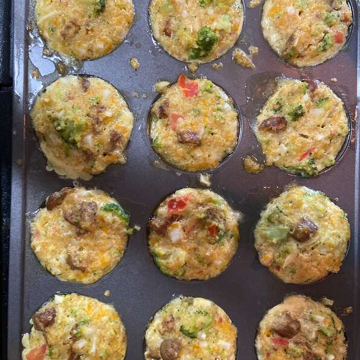

Brunch Cups

Description
These are the best brunch cups you'll ever eat. Perfect for an on the go morning.
Ingrediants
- 1 tablespoon butter, softened
- 4 large eggs large eggs
- 3 tablespoons heavy cream
- 1 cup cooked truRoots® Accents® Organic Sprouted Quinoa Trio
- ¾ cup shredded sharp Cheddar cheese
- ½ cup chopped fresh broccoli florets
- 2 tablespoons minced green onion
- ½ teaspoon garlic salt
Steps:
- Heat oven to 375 degrees F. Coat 6 muffin cups generously with butter.
- Beat eggs and cream in medium bowl. Stir in quinoa, cheese, broccoli, onion and garlic salt. Divide mixture evenly into prepared muffin cups.
- Bake 19 to 21 minutes or until golden brown. Let stand 5 minutes before removing from pan.